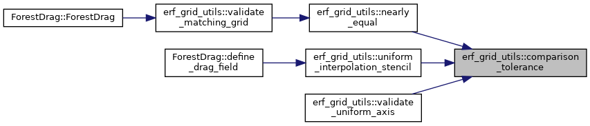
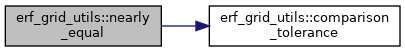
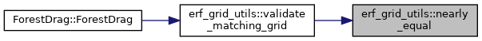
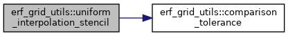
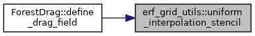
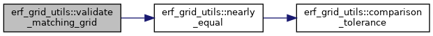
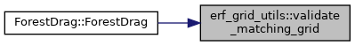
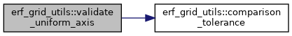

- Generated by
 1.9.1
1.9.1
|
ERF
Energy Research and Forecasting: An Atmospheric Modeling Code
|
Classes | |
| struct | UniformGridMetadata |
| struct | InterpolationStencil |
Functions | |
| AMREX_GPU_HOST_DEVICE AMREX_FORCE_INLINE amrex::Real | comparison_tolerance (amrex::Real lhs, amrex::Real rhs) noexcept |
| bool | nearly_equal (amrex::Real lhs, amrex::Real rhs) |
| std::string | validate_uniform_axis (const amrex::Vector< amrex::Real > &coordinates, int expected_size, const std::string &axis_name, const std::string &field_description, amrex::Real &origin, amrex::Real &spacing) |
| std::string | validate_matching_grid (const UniformGridMetadata &reference, const UniformGridMetadata &candidate, const std::string &reference_description, const std::string &candidate_description) |
| AMREX_GPU_HOST_DEVICE AMREX_FORCE_INLINE InterpolationStencil | uniform_interpolation_stencil (amrex::Real coordinate, amrex::Real origin, amrex::Real spacing, int point_count) noexcept |
|
noexcept |
Referenced by nearly_equal(), uniform_interpolation_stencil(), and validate_uniform_axis().

|
inline |
Referenced by validate_matching_grid().


|
noexcept |
Referenced by ForestDrag::define_drag_field().


|
inline |
Referenced by ForestDrag::ForestDrag().


|
inline |
